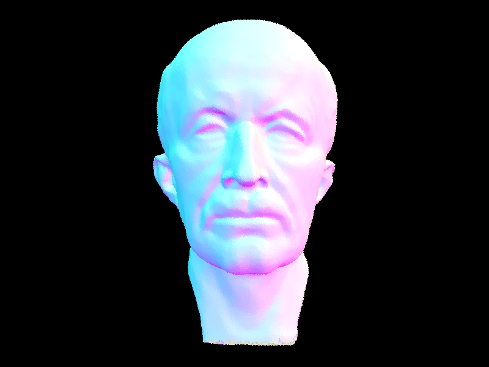
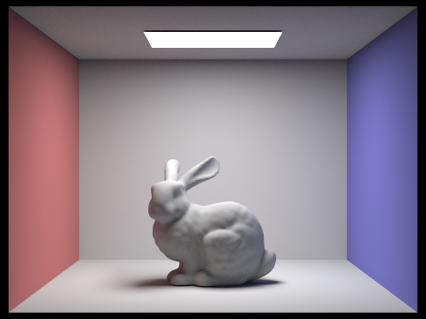

Overview
In short, this project aims to explore implementing core routines for a PBR (physically-based renderer) using the pathtracing algorithm. I explore ray generation and scene intersection of scenes and how physical based lighting is implemented allowing me to generate realistic pictures. Enjoy~
Part 1: Ray Generation and Scene Intersection (20 Points)
Let's walk through the ray generation and primitive intersection parts of the rendering pipeline.
For ray generation we take normalized image coordinates (x,y) and output a Ray in the world space. In order to do this, we first take the normalized image coordinates from the Image space and we map these coordinates in Camera Space. The normalized image coordinates are mapped to the coordinates on the virtual camera sensor. Once we we have these coordinates on the virtual camera sensor, we can map these coordinates that exist in camera space and then move them into world space. Once we have the virtual camera sensor coordinates in World Space we can then take this World Space coordinates add it to the current position where the camera is looking at in World Space. We then subtract this position by the position that the camera is looking at to obtain the Direction of the vector and lastly use the position of the camera to be the origin to generate our ray. In short - we move our normalized image coordinates into the camera space, then World space and generate our ray in the world.
In regards to primitive intersection parts of the rendering pipeline, the primitives that we check for in this portion of the project are intersections for triangles, spheres. We do this within the core rendering loop where we generate camera rays and estimate the radiance along those rays by testing for intersections, doing this allows us to calculate the global illumination of a scene.
Explain the triangle intersection algorithm you implemented in your own words.
To test for the intersection of triangles, I applied the Möller Trumbore Algorithm from lecture. This approach takes an optimal approach in calculating the intersection of a ray and a triangle without having to calculate the plane equation that contains the triangle. For convienience I have replicated the slide from our intro to ray tracing and accelaration lecture below.
Through the Möller Trumbore algorithm, I took the calculated t value and checked if it was within the bounds of the ray’s min and max t values, if it was out of bounds there was no intersection. We can treat b1, b2 and 1 - b1 - b2 as a set of barycentric coordinates, using this knowledge I added additonal checks to check for intersection. Such as making sure that if b1 is less than 0.0 or greater than 1.0 we should return false immediately. And with passing that condition, I also checked if b2 was less then 0 or if the sum of b1 + b2 is greater than 1.0.
Finally if the t value was greater than 0 and less than the current ray’s max t, then we update the max t value of the ray to update a closer intersection.
Here are some images with normal shading for a few small .dae files.

|

|
Part 2: Bounding Volume Hierarchy (20 Points)
Walk through your BVH construction algorithm. Explain the heuristic you chose for picking the splitting point.
The BVH construction algorithm that I implemented in this project first started out by computing the bounding box of the list of primitives that are provided. I do this by initiallizing a “global” bounding box variable and while I iterate through all the primitives provided, I get each primitive’s bounding box and continue to expand the “global” bounding box by adding each primitive’s bounding box to the “global” one.
After computing this bounding box from the list of primitives, I initialize a new BVHNode with the bounding box that was just constructed. I then take the difference between the start and end primitive pointers, providing me with the information of how many primitives in total that are being passed to the construct_bvh function. I initially counted how many primitives there were in the bounding box expansion, but refactored it to simply take the difference since it was more readable. Moving on, I added a condition to check if the number of primitives is less than the max_leaf_size, if so this meant that this node was a leaf and I assigned the BVHNode’s start and end pointers to point to the start and end primitive iterator pointers that were passed in.
If the node was not a leaf, I move on to recursively divide the set of primitives into two subsets. I first chose to split the primitives on the axis of the “global” bounding box that provides the largest spread, which is either the x, y or z axis. After obtaining the axis to split on, I then calculate the the avergae centroid value by iterating through all the primitives and obtaining their centroids based on the axis that I am splitting on.
I then move on to the final step where I recursively split the primitives into “left” and “right”. I do this by creating a start pointer and end pointer primitive iterators that is associated with the start and end primitive pointer iterators that were passed in. I do a in place sort of the primitives by having the “start_ptr” move forward and checking if the primitive on the axis I chose to split on is less then the average centroid value that was calculcated, if it is we increment the “start_ptr”. We do the same thing for the “end_ptr” except we go backwards and we check the primitives starting from the end, checking if they are greater or equal to the average centroid value, if it is we decrement the “end_ptr”. If the “start_ptr” and the “end_ptr” aren’t equal after incrementing and decrementing through those conditions we swap the “start_ptr” and the “end_ptr” values.
After sorting, I recursively call “contruct_bvh” using the “start_ptr” as the “end” and the “start” of the two recursive calls to “construct_bvh” which I assign to the node’s left and right child nodes.
Show images with normal shading for a few large .dae files that you can only render with BVH acceleration.
|
|

|
|
|
Compare rendering times on a few scenes with moderately complex geometries with and without BVH acceleration. Present your results in a one-paragraph analysis.
Using the BVH acceleration structure, the rendering time for moderately complex scenes was significantly reduced compared to the non-accelerated rendering time. For example, the rendering time for the Cow without BVH acceleration was around 40 seconds, while the rendering time with BVH acceleration was 0.0948 seconds. Another example is that of Max Plank, which would take an incredible amount of time without BVH acceleration, but took 0.1799 seconds to render. And another rendering that I wanted to include is Lucy (the angel) which would take more time to render without the BVH acceleration, but with BVH acceleration it took 0.0934 seconds. What these results show is that the BVH acceleration structure greatly improves the rendering time for scenes with complex geometry, as it reduces the number of intersection tests that need to be performed.
Part 3: Direct Illumination (20 Points)
Walk through both implementations of the direct lighting function.
At a high level this portion of the project is about implementing direct lighting estimations. There are two methods for achieving this - direct lighting with uniform hemisphere sampling and direct lighting by importance sampling lights.
Let’s walk through the implementation of direct lighting with uniform hemisphere sampling.
For those reading, I will be describing how I implemented the PathTracer::estimate_direct_lighting_importance function, which takes in a Ray and Intersection object. To set the stage, at this point of the function call, we have cast a ray from the camera through a specific pixel and into the scene and we’ve intersected something in the scene. We are given the Ray that was cast and the Intersection information of the point of intersection, with this information we begin the implementation.
For direct lighting with uniform hemisphere sampling first we make a cooordinate system for the hit point with the normal of the intersection aligned with the Z direction. At this point we’ve made two 3x3 matrices, o2w and w2o to help us transform from object to world and world to object coordinates.
We then construct our “hit_p” point by taking the origin of the ray and adding it to the product of the ray’s direction and the time of intersection from the Intersection object passed in. We then generate “w_out” which is taking the ray’s direction, negating it and taking the product with the w2o to convert it to object coordinates. We do this because we want to have a direction that points back directly to the camera, which will be the direction of the reflection of the incoming light, that is, if there is an incoming light.
We then establish how many samples, that is, the number of directions in the hemisphere we want to sample by taking the product between the number of lights in the scene and the number samples per area of light source. With this number established and the initilization of our “L_out” 3D vector, which represents how much light is reflected, we construct a for loop and begin sampling “num_samples”.
I will explain the implementation of the sampling loop by describing it’s execution for one cycle. I first uniformly sample an incoming ray direction in the hemisphere by invoking “hemisphereSampler→get_sample()” — I then construct a ray_bounce using 3 parameters, our current “hit_p” (our current point of intersection), “w_i” (the sampled direction from the hemisphere) in world coordinates, and with a “max_t” of the current ray’s max_t multiplied for 100. As for why 100, I played with different values and 100 produced the least amount of noise. I then set the min_t of the ray to EPS_F which alleviates the numerical precision issues that cause the ray to intersect the surface it started from, that is, by doing this, we won’t consider intersections with a surface at hit_p, our ray’s origin that we are shooting out.
We then cast this ray into the BVH, providing the BVH’s intersect method with the ray we constructed and an initialized intersection object which the BVH intersect method will populate. The BVH intersect method tells us if indeed there is an intersection, provides us a boolean value, I assign it to “hit_bounce”. If it is a hit, we then must confirm if the intersection was a light source, if it is not, we continue to the next sample. If it is a hit, we move forward by confirming if it is a light source by invoking the “zero_bounce_radiance” function, which takes in the ray that we constructed and the Intersection object that was fulfilled by the BVH→intersect function.
With the incoming light radiance result of the “zero_bounce_radiance” function, I take the two norm of the the result, “l_i” and check to see if it’s greater than zero. If it’s greater than zero it means we have confirmed that it is a light source. If it is a light source, I begin constructing the reflection equation, which will allow us to calculate how much outgoing light there is from this source.
And so, I construct the reflection equation, by first obtaining the “f_r” term by using the initial Intersection bsdf’s function - i.e isect.bsdf→f(w_out, w_i). Which translates to taking “w_out” our outgoing direction and w_i our sampled hemisphere direction and obtaining the BSDF from them. I objtain the cos_theta term to simply be w_i.z, that is because the cosine of the angle between two unit vectors is equal to their dot product and since isect.n is equal to <0,0,1> in object coordinates, we are left with just w_i.z. (magic, like a wizard). I then obtain the pdf term which in this case is 1.0/ (2 * PI), which is simply following the reflection equation.
We then take the product of the “f_r” term, the “l_i” term and “cos_theta” term (which is divided by the pdf) and we obtain how much outgoing light is constributed by this sample. We add this to our “L_out” vector which is accumulating each sample’s contribution and after we’re done with taking all the samples we normalize by taking the product of “L_out” by 1.0/num_samples, the number of samples.
And that’s how we implement direct lighting with Uniform hemisphere sampling.
Let's talk about direct lighting by importance sampling lights
For this technique, a lot of the setup involved is shared with how direct lighting with uniform hemisphere sampling is implemented. So for this explanation I’ll briefly note the same decisions but will focus more on what was different in the implementation with importance sampling.
With that said, again for “PathTracer::estimate_direct_lighting_importance(const Ray &r, const Intersection &isect)” - we are given the ray cast originating from the camera and the Intersection, the point that we will use as our origin to cast rays towards the light sources provided. We setup our object to world space and space to world transformation matrices. We’ve also established our “hit_p”, our current point of intersection, we’ve also calculated “w_out”, which is the direction towards the camera, where the reflected light will travel towards. With our “L_out” vector initialized that will have the estimate of the lighting from this intersection , which we will return at the end.
At a high level, what we will want to accomplish at this point is to take each light in the scene, sample directions between the light source and the hit_p and apply the the reflectance equation as in the previous task to calculate the total amount of outgoing light.
How I implemented this was to do a ranged based for loop to loop through all of the scene lights. For each light I initialized some variables, radiance, wi (the sampled direction between p and the light source), dist_to_light (the distance between p and the light source in the wi direction) and pdf (the value of the probability density function evaluated at the wi direction). With these variables set I initialize the number of light samples that we will obtain per light to be “ns_area_light” which is the number of samples per area light source.
It is here that we check what type of light we are using, we check if the light in question is a point light, if it’ a point light I change “num_light_samples” to be 1, since all samples from a point light will be the same. After verifying what type of light it is, I iterate by how “num_light_samples”. In this loop I call the light’s “sample_L” function which will set values to previously mentioned variables - hit_p, wi, dist_to_light and pdf. I also generate the “w_in” to translate wi into object coordinates. I do this by checking if the light is under the surface at the hit point by checking the z-coordinate value of the wi vecto r in the object coordinate, we do this because we defined the Z-positive direction of the object coordinates to be the direction of the normal vector at the point of intersection. That is, if w_in.z < 0 we continue, otherwise we move on to casting our “shadow ray”.
For this next section in casting a “shadow ray”, as mentioned it is helpful to think about casting a ray betweeen the hit point and the light as casting a “shadow” ray, that is if the ray intersects the scene, then the hit point is in a shadow with respect to the current light source. So in short - if the ray intersects, it must be in a shadow of the light, if it doesn’t we can move forward with applying the reflectance equation to it.
To test this “shadow ray”, I create a ray, called “shadow_ray” with the hit_p and the incoming light direction (in world coordinates). I again ensure that we set the “min_t” to EPS_F so that we avoid intersecting with the surface we are originating from. I also substract EPS_F to dist_to_light to avoid intersecting with the light itself, since we care about things blocking the light.
I initialize an Intersection object “isect_of_shadow” and invoke BVH’s intersect function with the “shadow_ray” and the “isect_of_shadow”, if it does not intersect this means that we have reached the light source. Since it did not intersect, I move on to invoke the bsdf of the initial Intersection object that we are provided with the “w_out” vector and the “w_in” vector (notice that these are both in object coordinates”. And then I set the “cos_theta” to be w_in.z as noted from the implementation of Uniform Hemisphere Sampling. With these variables set, I add the following equation to our radiance variable term — l_light * f_r * cos_theta/ pdf. After going through all the “num_light_samples” I add this radiance (normalizing it by the number of num_light_samples) to our L_out. And after going through all of the lights, we are able to complete our estimation of direct lighting.
Here are some images rendered with both implementations of the direct lighting function.
| Uniform Hemisphere Sampling | Importance Sampling |
|---|---|
|
|
|
Focus on one particular scene with at least one area light and compare the noise levels in soft shadows when rendering with 1, 4, 16, and 64 light rays (the -l flag) and with 1 sample per pixel (the -s flag) using light sampling, not uniform hemisphere sampling.
|
|

|
|
|
|
I used the dragon to illustrate how the noise levels in the soft shadows changed depending on how many light rays we used. As we can see, when we are only using 1 light ray the soft shadows are either non-existent or barely visible on the edges of the dragon. As we increase to 4 light rays we begin to see a some “sketch” of the soft shadows, the shadow of the dragon itself, viewed on the top left corner, however the detailed features of the dragon where the soft shadows appear get blurred with the details themselves. As we get to 16 light rays, we’re starting to see a well formed shadow of the dragon, the soft shadow appears and the details, the features of the dragon begin to show. Notice the scales on the dragon begin to appear. When we get to 64 light rays, we can really get a good look at the interior mouth of the dragon (soft shadowing has improved!) and we get a clearer depiction of the dragon’s shadow and a better sense of how it’s hind leg looks like with the improved display of the soft shadows with the increase to 64 light rays.
Compare the results between uniform hemisphere sampling and lighting sampling in a one-paragraph analysis.
In terms of rendering quality, light sampling produces less noise in soft shadows compared to uniform hemisphere sampling. This is because light sampling is a more direct approach to calculating the lighting, whereas uniform hemisphere sampling relies on sampling directions from the hemisphere, which may not always result in a direct path to the light source. However, uniform hemisphere sampling can be useful in situations where there are no explicit light sources and the lighting comes from indirect illumination (but we are not dealing with that situation in this case). Ultimately, the choice between the two techniques depends on the scene being rendered and the desired level of accuracy and speed.
Part 4: Global Illumination (20 Points)
Walk through your implementation of the indirect lighting function.
For those reading, this is where we want to focus on rendering images with full global illumination. To accomplish this we need to implement indirect lighting effects. The following focuses on how I implemented “PathTracer::at_least_one_bounce_radiance(…)”, which is the workhorse of our global illumination functionality.
To focus on what I implemented, we will assume that the o2w and w2o, matrices for object-to-world space and world-to-object space transformations have been provided, along with the “hit_p”, the hit point of the ray and “w_out”, the outgoing direction in the local object frame.
I first establish our base cases where I check if the “max_ray_depth” is equal to zero, in this case we have hit our base case and return the zero vector. I then move to check if the current intersection is not of the delta distribution so that we can include the radiance from this intersection by invoking “one_bounce_radiance”. The next case that I check immediately is if the max_ray_depth is equal to 1, this means that we should return the “L_out” result immediately since we will no longer recurse any further.
Moving on, I incorporate Russian Roulette, through the “coin_flip” function, providing it with a “RUSSIAN_ROULETTE” argument which denotes the probability that the function will return true. This allows us to provide an unbiased method of random termination which prevents us from infinitely recursing in one case where we have set our max_ray_depth to be an extremely large number. So in this if condition I check if the “coin_flip” function returns true and if the current Ray’s depth value is greater than 1 or if the current Ray’s depth is equal to the “max_ray_depth” if any conditions hold true, then this means that indirect illumination is “turned on” and we will move forward with tracing one ray into the scene.
I set my variables up, “w_in” an incoming radiance direction vector, a double “pdf” which will hold the probability density function evaluated at the return w_in direction. With these two variables I obtain the “f_r”, which is the BSDF value. It also sets the “w_in” vector which provides the incoming radiance direction and the pdf. I set “cos_theta” to the z component of the “w_in” vector as previously mentioned in part 3.
I then construct the next inverse ray that we will cast by taking the hit point of the ray — hit_p, we then take “w_in”, the incoming radiance direction samples from the bsdf of the isect and we decrement the depth of the ray. When generating this new ray orginating from the existing hit point, I offset the range of valid intersections with the value of EPS_F. With this new ray, which I named “ray_recurse_bounce”, I construct its Intersection object counterpart.
I then cast this ray through our BVH, having the BVH check for an intersection. If our ray does intersect an object, we want to recursively call on “at_least_one_bounce_radiance”. Note why this is a valid recursive step, becase when constructing the “ray_recurse_bounce” ray we decremented the ray’s depth so that it will eventually reach one of our base case conditions.
After the recursive call is complete, we obtain the radiance value. I move on to check the condition if the ray’s depth is not equal to “max_ray_depth”, if this is the case, I take the product of all the terms for the reflection equation and normalize it not only by the “pdf” value, but also normalize it by the probability value provided to coin_flip and I increment this value to our “L_out” vector which represents how much light is reflected.
And with that, the function returns the one bounce radiance + radiance from extra bounces at this intersection point.
Show some images rendered with global (direct and indirect) illumination. Use 1024 samples per pixel.
|
|
Pick one scene and compare rendered views first with only direct illumination, then only indirect illumination. Use 1024 samples per pixel.
|
|
|
As we can see, the scene with indirect illumination, the colors from the colored walls (red and blue) give a sort of tint to the back wall and the ceiling, sans the ceiling light, and the floor. We get this lighting because on the additional (recursive) ray bounces that we produce, for each intersection we are calculating the reflection at that point and in this case some of those intersections, those reflection calculations stem from those red and blue walls. In addition we can see that there are almost not prominent soft shadows, it has all been in a sense averaged out.
For the direct illumination, we can see that the shadows that have been casted are directly coming from the lights, that is, these types of shadows are more salient when it comes to direct lightining. We also see that that the shadows are “black” and is void of any coloring that would be received from the walls.
For CBbunny.dae, compare rendered views with max_ray_depth set to 0, 1, 2, 3, and 100 (the -m flag). Use 1024 samples per pixel.
|
|
|
|

|
|
|
|
When max_ray_depth is zero all that we see is the light from above. This makes sense because without casting any rays we are not calculating any lighting calculations beyond the light itself, which produces a dark room
When max_ray_depth is 1 it is enough to gain visibility on the whole scene, however note that the surrounding environment of the light is dark, as a result of no additional rays bouncing back towards the ceilng. We also see an adiitional confirmation of this by noting how the dark shadows on the bunny is a result of light from the floor not producing an additional bounce, which would result in at least a soft shadow, an illumination of that area.
When max_ray_depth is 2 we can already see how one additional bounce illuminates details from under the bunny that we couldn’t see but also this additonal ray bounce also allows us to gain visibility of the ceiling
When max_ray_depth is 3 we start to see the shadows in the corners of the box and the lines start to be less prominent and appear to be more like a soft shadow.
When max_ray_depth is 100, we start to see the overall illumination take on a hint of the colors from the walls. Yet we also, and this is more subtle, start seeing noise being generated in the top left portion of the back wall. We see this because as we are recursively bouncing and calculating the illumination, there’s a point where we have generated enough rays and it’s producing artifacts.
Pick one scene and compare rendered views with various sample-per-pixel rates, including at least 1, 2, 4, 8, 16, 64, and 1024. Use 4 light rays.
|
|
|

|
|
|
|

|
|
|
When sample-per-pixel is set to 1 we get an extremeley noisy picture
When sample-per-pixel is set to 2 we get a less noisy picture, something that we should start taking notice to are the lines (horizontal and vertical on the ceiling and the walls) as they are still very noisy and not well defined
When sample-per-pixel is set to 4, the noise starts to calm itself on the walls, we can see significant progress on the red and blue walls.
When sample-per-pixel is set to 8, we start seeing a better contrast between the bunny and the background, the noise is being reduced. But we should also take note that the lines (one could say where the planes are intersecting), those segments are starting to look crisp and well defined due to the noise reduction.0
When sample-per-pixel is set to 16, the top portions off the bunny start to become less noisy and well defined, that is, as we look from top of the bunny’s back towards it’s neck, the details which were initially obscured by the noise are slowly starting to become revealed. The Red and blue walls, their centers are strating to appear smoother, the noise slowly fading away.
When sample-per-pixel is set to 64, we start noticing more details, notice the ridges that are slowly appearing on the bunny’s hind legs and how we are able to get a better sense of the bunny’s front paws. And the background has started to become smooth around the bunny.0
When sample-per-pixel is set to 1024 we finally get to see the details on the bunny that were initially obscured. We now see on the bunny’s hind legs the “fluffy”-ness the ridges that were not visible due to the noise and notice the nice soft shadows we get on the front paws of the bunny and the ears start looking so smooth! And look at the walls, so smooth and and even the lines have nice soft shadows.
They say a picture is worth a thousand words, I say, a sample-per-pixel is worth a word. The more samples-per-pixel we take, the more words we can use to describe what’s actually there. And to conclude the analysis here, we see that taking more samples is a way to reduce nosie in our images, and that for parts of the image that have a lot of detail, it takes more samples to get visibility on the granular details.0
Part 5: Adaptive Sampling (20 Points)
Explain adaptive sampling. Walk through your implementation of the adaptive sampling.
Adaptive sampling tries to reduce the use of using a high fixed number of samples per pixel, we focus on the samples on the areas of the the image that are more dificult, that is, that have high variance, or a lot of details. This allows for faster rendering times by avoiding unnecessary sampling areas that are more “easy” in the image.
To illustrate, please take a look at the bunny image and its companion image, its rate image, which shows the sample rate of every pixel. The red colors indicate where high sampling rates occured, while blue where low sampling rates occured, green is in between.
At a high level , for implementing adaptive sampling, we still will be uniformly sampling each pixel a fixed number of times, however with adaptive sampling, we will be checking ever so often if the pixels
For implementing adaptive sampling I modified PathTracer::raytrace_pixel(…) to implement the adaptive sampling algorithm where for each pixel I detect whether the pixel has converged as we trace ray samples through it.
To implement adaptive sampling I first initialize two sigma variables, “s_1” and “s_2” which will be keeping track of a sample’s illuminance. I also initialize “ns_adaptive” variable to keep track of how many samples have been taken so far, since it usually will be less than the “ns_aa” (the number of camera rays in one pixel).
After obtaining a sample point, normalizing , generating a camera ray based on the normalized x and y values and obtaining the corresponding Ray from these coordinates along with setting the depth of the Ray to “max_ray_depth”, I obain its estimated radiance by invoking the “PathTracer::est_radiance_global_illumination(r)”. I assign this value to “est_g_illumination and add it to the total illumination so far in the “est_g_illumin” 3D vector, since radiance are three-channel Vector3D storing R, G, B values.
I then increment ns_adaptive to keep track of how many samples have been taken. I then move on to the most important part, which is checking a pixel’s convergence. Because I don’t want to do this for every sample, I first check two things in this if condition. First I check if “samplesPerPatch” > 0, to confirm that adaptive sampling is the desired method for sampling. Once we get past this condition, I create a double “illum” variable where I obtain the the current sample’s illuminance through the “.illum()” call. Circling back to our two sigma variables “s_1” and “s_2”, I add “illum” to “s_1” and I add “illum” squared to “s_2”.
Second, while we are collecting each sample’s illuminance, I only want to check if the pixel has converged every “samplesPerPatch”, so I add an additional if condition check where I take the modulo of “samples_so_far + 1” with “samplesPerBatch” and if its zero, it means it’s time to check.
I finally calculate the mean, the standard deviation by assigning them both variables “mean” and “std_dev” (both are doubles). I finally declare a double variable called “MAGIC_I” which is how we will be measuing the pixel’s convergence. I assign “MAGIC_I” to the value of “1.96 * std_dev/ sqrt(samples_so_far + 1)” (note that I have removed type casting and prefixes for brevity and clarity). If “MAGIC_I” is less then or equal to the “maxTolerance * mean” then it means that the pixel has converged. When it converges we can break from the loop. If not, we continue obtaining another sample and check until the next modulo “samplesPerPatch”.
To conclude the implementation for adaptive sampling, by assigning “ns_adaptive” to “num_samples”, making it easier to read the intention of what the code is trying to produce. And some final remarks — I normalize the estimated illuminance of the pixel by the number of samples, which in this case is the “ns_adaptive” variable. I set num_samples to the “sampleCountBuffer” which allows us to produce the sampling rate image.
Pick two scenes and render them with at least 2048 samples per pixel. Show a good sampling rate image with clearly visible differences in sampling rate over various regions and pixels. Include both your sample rate image, which shows your how your adaptive sampling changes depending on which part of the image you are rendering, and your noise-free rendered result. Use 1 sample per light and at least 5 for max ray depth.
|
|
|
|
|
|